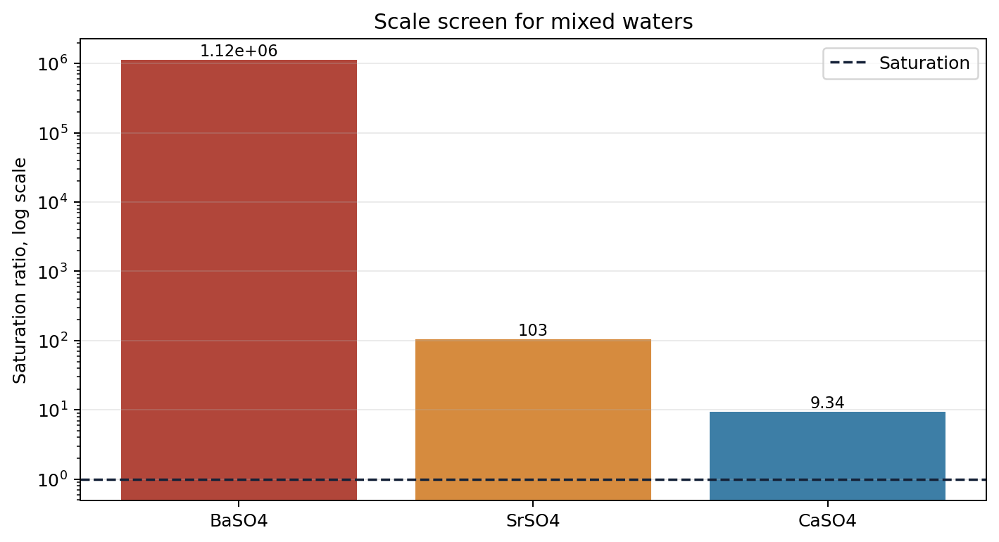

1. Waxy crude flow assurance
Screens a subsea line for wax margin, pressure loss and thermal limits with published crude properties and field geometry.

2. Crude separation flowsheet
Pumps, preheats, separates, desalts and stabilises crude. Mass and energy balances close through a water cut disturbance.

3. Production chemistry toolkit
Checks water analysis quality, sulfate scaling, mixing compatibility, carbonate tendency and treatment train arithmetic.
4. Certificates
Coursera course certificates and AIChE, SAChE and RAPID certificates, with links to the full PDF files.
Current application documents
Open or download each file below.